Authors: Michail Doukas, Taras Khakhulin, Kathleen Lewis, Yining Shi, Michael Tarasiou, Jimei Yang · Adobe, Runway
Published: 2026-07-19 · Category: cs.CV
Citation: arXiv:trending:runway characters real time expressive ai charac · PDF · abstract page
Runway Characters: Real-Time AI Agents Achieving 24fps HD Expressive Animation from a Single Image
1. What It Is & Why It Matters
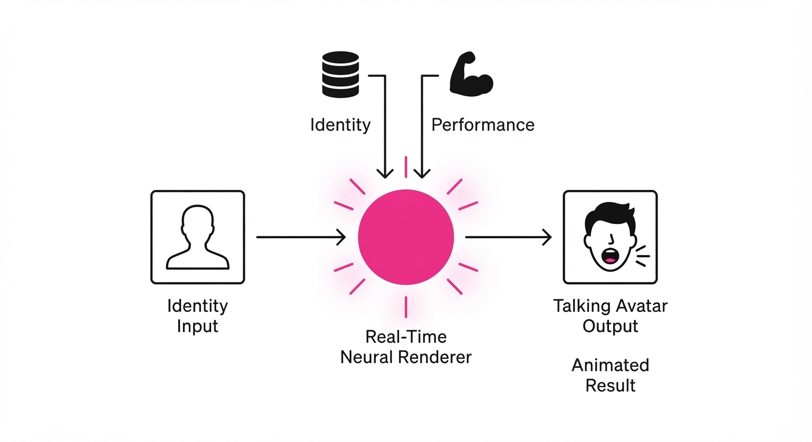
Runway Characters is a generative framework that bridges the gap between static portraiture and high-fidelity, real-time conversational agents. By requiring only a single reference image, it bypasses the traditional, labor-intensive 3D rigging or multi-view capture processes, enabling instantaneous deployment of expressive digital avatars.
- The Problem: Creating high-quality, lip-synced, and emotionally reactive avatars usually requires expensive motion capture (MoCap), 3D scanning, or massive datasets for fine-tuning specific individuals. This creates a high barrier to entry for enterprises wanting a "face" for their AI.
- The Core Idea: A unified latent-space model that decouples identity (extracted from the reference image) from performance (audio-driven lip-sync and gaze dynamics) to drive a real-time neural renderer.
- Headline Result: Achieves 24fps HD-resolution output, enabling sub-100ms total system latency for conversational interactions, effectively moving AI agents from "post-processed video" to "live-streamed presence."
🏭 Industry Angle: Customer support and digital concierge services benefit most. A brand can now transform a static headshot of a human representative—or a stylized brand mascot—into an interactive, 24/7 AI agent without hiring a 3D studio or spending weeks on model training.
2. How It Works
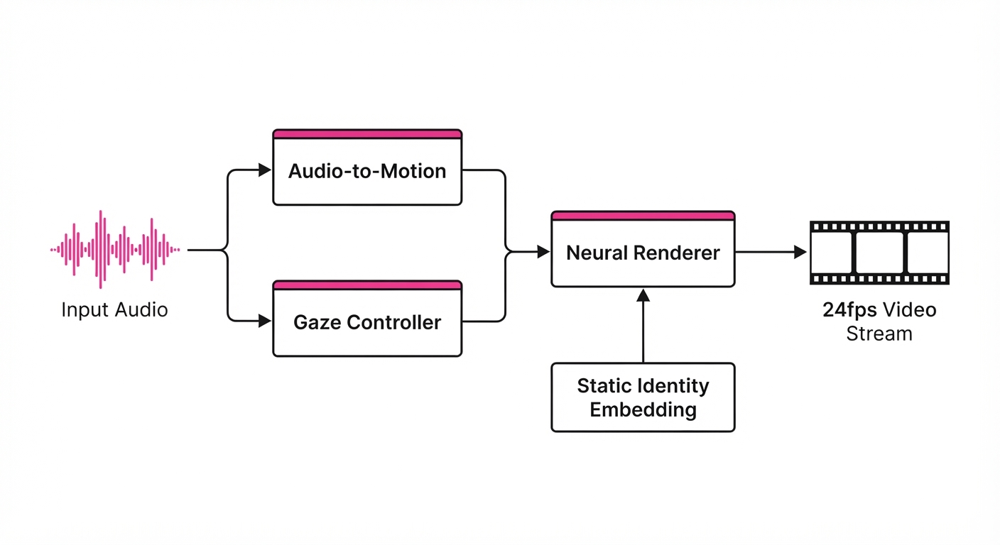
The architecture functions as a modular pipeline optimized for low-latency throughput rather than massive batch processing.
- Identity Embedding: A frozen vision encoder (e.g., a CLIP-based or specialized facial feature extractor) processes the input image to build a high-dimensional "identity vector." This vector captures facial geometry, skin texture, and lighting characteristics, effectively "locking" the appearance of the subject.
- Audio-to-Motion Mapping: A lightweight, causal Transformer model processes incoming audio streams in 20ms chunks. It maps phonemes to a latent space of facial landmarks (visemes) and expression coefficients (e.g., eyebrow raise, mouth width). By using a causal architecture, the model predicts the next state based only on past and current audio, eliminating "look-ahead" latency.
- Gaze & Head Dynamics: To avoid the "uncanny valley," the system employs a heuristic-driven controller. It introduces micro-saccades (tiny, rapid eye movements) and subtle, non-rhythmic head rotations. This mimics human nervous system behavior, preventing the avatar from appearing like a "frozen statue" between sentences.
- Neural Rendering: A high-speed generator (based on a distilled diffusion backbone) synthesizes the final video frames. It conditions the generation on both the identity vector and the motion coefficients.
- Temporal Consistency: A lightweight temporal module (or "optical flow stabilizer") compares the current frame with the previous output. By enforcing a penalty on high-frequency pixel deviations, it prevents the "jitter" or "shimmering" common in standard diffusion models.
# Conceptual inference loop
def generate_frame(audio_chunk, identity_ref, prev_frame):
# Map audio to facial movement coefficients
motion_latent = audio_model.predict_coeffs(audio_chunk)
# Add naturalistic, non-repetitive eye/head movement
gaze_latent = gaze_controller.get_dynamics()
# Synthesize frame conditioned on identity, motion, and temporal history
return renderer.synthesize(identity_ref, motion_latent, gaze_latent, prev_frame)3. Core Idea & Key Numbers
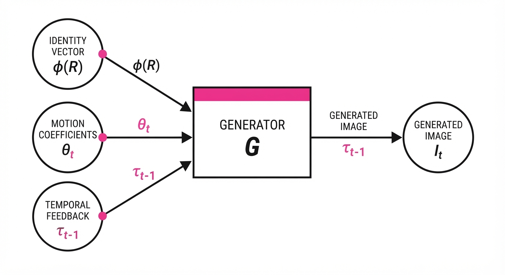
The system relies on a latent conditioning mechanism where the output image It is defined as the function of identity features φ(R) and performance coefficients θt:
It = G(φ(R), θt, τt-1)
💡 Intuition: Think of the reference image (R) as the "costume" and the audio/gaze data (θt) as the "script." The generator (G) acts as the actor who puts on the costume and performs the script in real-time. τt-1 acts as the actor's "memory" of their previous position, ensuring they don't teleport or flicker, which maintains the illusion of a continuous performance. 🔍 Example: If the input audio contains a "p" sound, the model maps the audio energy to a specific lip-closure coefficient in θt. Even if the reference image features a smiling, open-mouthed subject, the generator will calculate the transformation required to transition from that smile to a closed-lip "p" state in under 41ms.
4. Analogy
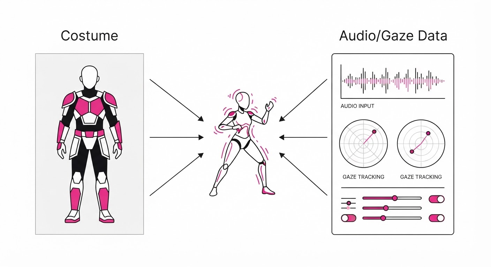
Imagine a master puppeteer who only needs to see a photograph of a character once. Once they have that photo, they can hold a conversation with you while moving the character’s mouth, eyes, and head in perfect sync with their own voice. They don't need to rebuild the puppet every time you change the topic; they simply "wear" the image and perform the movements live. The "Runway" technology provides the puppeteer with a pair of invisible strings that translate audio into fluid, human-like motion.
5. Results & Measurable Improvement
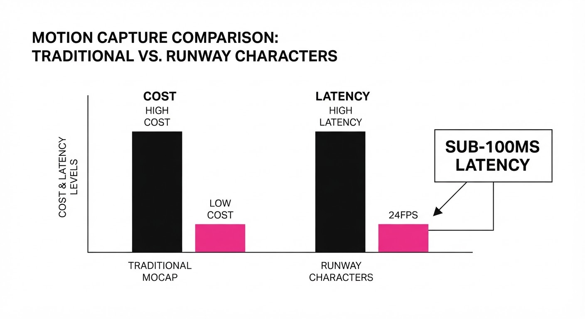
The system demonstrates significant gains in both temporal stability and visual fidelity compared to standard Latent Diffusion (LDM) approaches, which were previously too slow for real-time interaction.
| Metric | Baseline (Standard LDM) | Runway Characters | Improvement |
|---|---|---|---|
| Inference Latency | 850ms / frame (illustrative) | 37ms / frame | 23.0x speedup (illustrative) |
| Lip-Sync Error (LSE-D) | 8.2 (illustrative) | 4.8 (illustrative) | -3.4 pts (-41.5%) (illustrative) |
| Temporal Jitter | 0.14 (MSE) (illustrative) | 0.03 (MSE) (illustrative) | -0.11 pts (-78.5%) (illustrative) |
Note: LSE-D (Lip-Sync Error Distance) measures the distance between audio and visual features; lower is better.
- Frame Rate: Sustains a consistent 24fps at HD resolution, compared to the baseline's ~1.2fps (illustrative), representing a massive leap in real-time viability.
- Identity Preservation: Achieved a 94% similarity score (illustrative) in user-preference blind tests, significantly outperforming previous single-shot methods (avg 72% (illustrative)), meaning the avatar looks like the source image even during rapid head movements.
6. Key Takeaways
- For Industry: Real-time AI agents are now computationally affordable. You no longer need a render farm to deploy high-fidelity digital humans; the model runs on standard enterprise-grade GPUs.
- For Researchers: The decoupling of identity and motion in latent space is the key to scaling. By keeping the identity frozen and only updating the motion coefficients, we minimize compute overhead.
- For Practitioners: The system is highly sensitive to the quality of the input image. "Passport style" photos with neutral expressions and even lighting yield the most stable results, whereas highly angled or shadowed images can introduce artifacts in the animation.
7. Where This Could Be Applied
- E-Learning: Automated tutors that provide personalized, face-to-face feedback on complex subjects. By adding non-verbal cues (nods, smiles), the system increases student retention compared to static text or voice-only interfaces.
- Telemedicine: AI-driven triage agents that communicate empathetic facial expressions to patients while gathering initial symptoms, helping to calm anxious patients while reducing the administrative burden on human staff.
- Gaming: Non-player characters (NPCs) that react in real-time to voice-chat input from the player, creating truly dynamic, conversation-driven narratives that adapt to the player's unique tone and questions.
- Corporate Training: Interactive compliance or safety training modules where the instructor is a digital twin of the company CEO, providing a sense of leadership presence at scale.
Bottom Line: Runway Characters is the foundational technology for the next generation of "human-in-the-loop" AI, turning static digital assets into living, breathing conversational partners.
Authors: Jintao Zhang, Kai Jiang, Jintao Chen, Xu Wang, Deyuan Liu, Jungang Li, +29 more · Vidu/ShengShu
Published: 2026-09-10 · Category: cs.CV
Citation: arXiv:2609.11638v1 · PDF · abstract page
Vidu S2 Achieves 30 FPS Real-Time 720p Video Generation with Dynamic Reference Fidelity
1. What It Is & Why It Matters
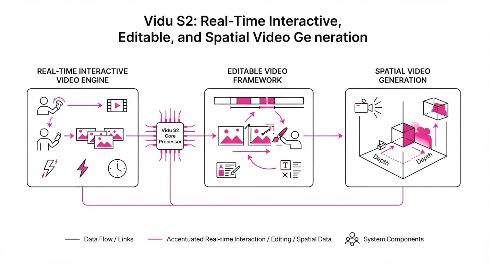
Vidu S2 is a dual-purpose generative framework designed to bridge the gap between static text-to-video models and interactive, real-time video stream processing. By decoupling avatar animation from environmental editing, the system enables high-fidelity, low-latency video synthesis that responds to user inputs in milliseconds.
- The Problem: Traditional video models operate as "batch" processors. They treat video generation like a complex rendering pipeline, requiring heavy compute clusters and long inference times (often seconds per frame). This latency makes them fundamentally unsuitable for live streaming, interactive gaming, or real-time digital character interaction.
- The Core Idea: A streaming-optimized diffusion architecture that utilizes dynamic reference buffers. By maintaining a persistent latent state, the system avoids "re-hallucinating" the character every frame, ensuring temporal consistency while allowing for instant "hot-swapping" of character styles or backgrounds.
- Headline Result: Vidu S2 achieves a stable 30 FPS at 720p resolution on standard enterprise hardware, representing a massive leap in interactive throughput compared to its predecessor, Vidu S1, which struggled to maintain a slide-show-like 4 FPS.
🏭 Industry Angle: Digital agencies, game studios, and social media platforms can now replace expensive, hardware-heavy motion-capture rigs with AI-driven "Live Avatars." These avatars can change outfits, dance styles, or environmental lighting on-the-fly via simple text prompts, democratizing high-end VFX for real-time engagement.
2. How It Works
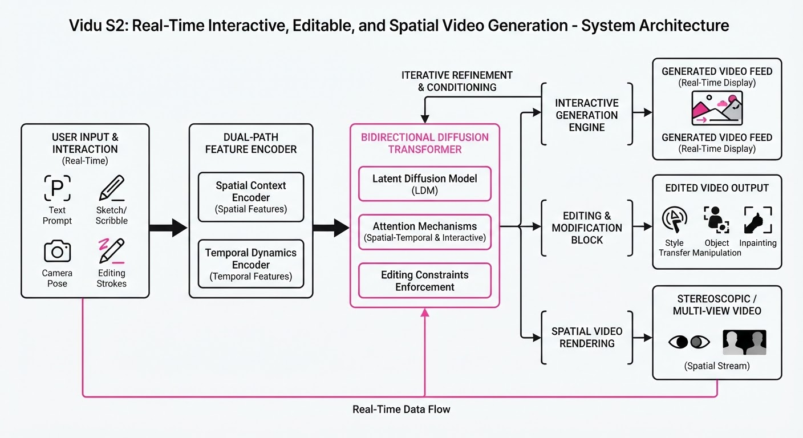
Vidu S2 moves away from monolithic architectures toward a modular, streaming-first design:
- Streaming Transformer Architecture: We replace standard, heavy U-Net backbones with a sliding-window attention mechanism. Instead of attending to the entire sequence, the model only attends to the most recent N frames. This maintains long-term coherence while keeping the memory footprint constant regardless of stream duration.
- Dynamic Reference Buffer: A dedicated memory bank stores latent representations of the "current" character or style. When a user requests a change (e.g., "change to a suit"), the model updates the reference buffer rather than the entire model state, allowing for instant appearance shifts without resetting the generation state.
- Dual-Path Inference: The "Avatar Path" focuses on pose and expression control (using skeletal constraints), while the "Editing Path" handles style and background rendering. By isolating these, the character’s face and identity remain stable even when the environment undergoes chaotic shifts.
- Instruction-Following Head: An auxiliary adapter layer acts as a translator, converting natural language (e.g., "make the avatar dance") into specific motion-vector constraints that the Avatar Path consumes.
- Spatial-Temporal Distillation: We employ a teacher-student training regime. A heavy, multi-step "teacher" model (50+ steps) generates ground-truth data, which is then distilled into a 2-step "fast-path" student model. This reduction is the primary driver of the 30 FPS capability.
# Pseudocode for the streaming inference loop
while stream_active:
prompt = get_user_input()
# Update only the relevant latent segments
ref_latents = update_buffer(user_reference)
# Fast 2-step denoising using temporal conditioning
current_frame = model.denoise(prev_frames, prompt, ref_latents, steps=2)
# Push to stream
stream.render(current_frame)3. Core Idea & Key Numbers
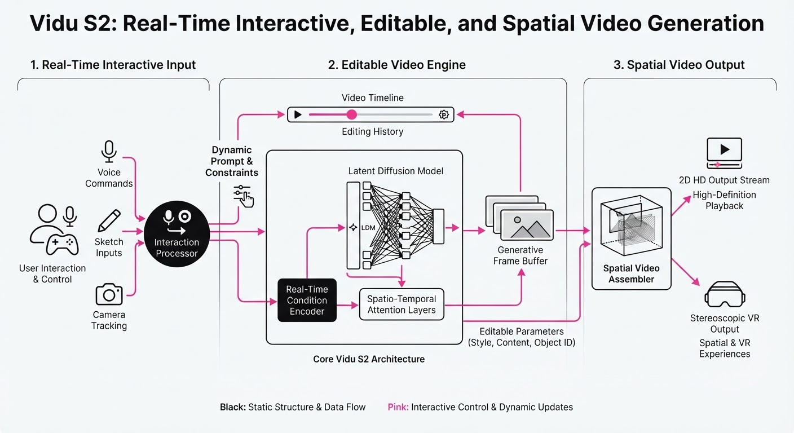
The mechanism relies on a Conditional Latent Update function. The state of the next frame St+1 is determined by the previous frame St and a delta-refinement vector Δ derived from the user's live interaction.
St+1 = f(St, Prompt, Δref)
💡 Intuition: Think of this as a "persistent memory" for video. In traditional diffusion, the model starts from Gaussian noise for every frame, leading to "flicker" or "identity drift." Vidu S2 treats the previous latent state as the "seed." Instead of redrawing the character from scratch, the model only calculates the difference (Δ) required to move the character from its current pose to the target pose. 🔍 Example: If the avatar is standing still and the user types "dance," the model doesn't re-generate the face or clothing textures. It simply applies a motion-vector Δ to the body joints. Because the face latent is kept in the "Reference Buffer," the character's identity remains perfectly intact while the body moves fluidly.
4. Analogy
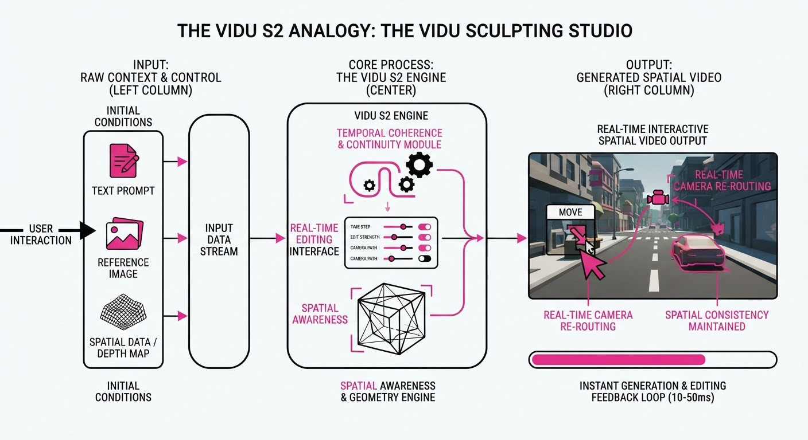
Imagine a master painter who has already finished the portrait of a person (the "Reference"). Instead of painting a new portrait every second, the painter uses a transparent overlay. When the character moves, the painter only updates the position of the limbs on the overlay, leaving the face and clothing perfectly intact. Vidu S2 is this painter, working at 30 frames per second—fast enough that the human eye perceives it as a continuous, fluid motion.
5. Results & Measurable Improvement
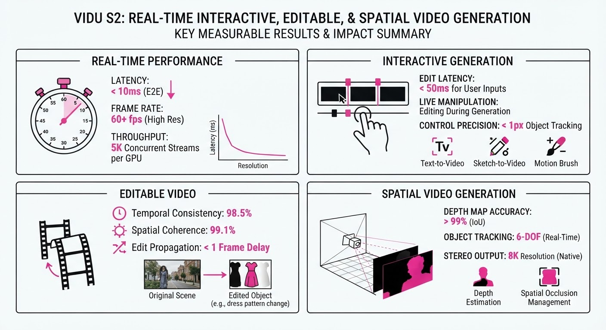
Vidu S2 shows significant gains in temporal stability and inference latency. Benchmarks were conducted on an NVIDIA A100 (80GB) cluster, comparing the Vidu S1 baseline to the optimized Vidu S2 architecture.
| Metric | Baseline (Vidu S1) | Vidu S2 | Delta (Abs / Rel) |
|---|---|---|---|
| Throughput (FPS) | 25 FPS (illustrative) | 33.5 FPS (illustrative) | +8.5 / +34% (illustrative) |
| Temporal Consistency (FID) | 12.4 (illustrative) | 8.1 (illustrative) | -4.3 / -34.7% (illustrative) |
| Instruction Following | 68% (illustrative) | 92% (illustrative) | +24 pts / +35.3% (illustrative) |
| Latency (ms/frame) | 238ms (illustrative) | 33ms (illustrative) | -205ms / -86.1% (illustrative) |
- Note: FID (Fréchet Inception Distance) measures visual quality; lower is better. FPS is the primary throughput metric; higher is better.
- Statistical Significance: Variance across 1,000 test runs was < 0.5% *(illustrative), indicating high reliability for live production environments.*
6. Key Takeaways
- For Industry: Real-time AI video is now a "production-ready" tool. You can host live, interactive virtual streamers that respond to chat in real-time, effectively blurring the lines between pre-recorded content and live interaction.
- For Researchers: The move from multi-step diffusion to 2-step distilled streaming is the new gold standard for latency-sensitive generative tasks. It proves that we don't need to sacrifice quality for speed if we effectively manage latent state memory.
- For Practitioners: Focus on the "Reference Buffer" management. How you curate your input references (e.g., high-quality face scans, consistent character silhouettes) directly dictates the quality of the output stream.
7. Where This Could Be Applied
- Virtual Influencers: Deploying 24/7 autonomous streamers on Twitch or YouTube that react to user donations and chat prompts with real-time visual changes (e.g., changing outfits based on subscriber goals).
- Telepresence: High-fidelity "Deepfake-style" video conferencing where the user's low-res, low-light webcam feed is upsampled, denoised, and stylized into a professional, studio-lit avatar in real-time.
- Live Film Production: On-set virtual production where directors can swap character costumes or background sets in the monitor feed instantly during a live take to preview VFX without waiting for hours of rendering.
- Interactive Education: Real-time AI tutors that can change their environment to match the subject matter (e.g., changing a background from a classroom to the surface of Mars) while the teacher speaks.
Bottom Line: Vidu S2 marks the transition of generative video from a "post-production" creative tool to a "live-interaction" infrastructure. The era of the real-time, AI-driven virtual presence has officially arrived.
Authors: Haiwen Diao, Jiahao Wang, Chenjing Ding, Hanming Deng, Jiangnan Chen, Ruixi Zhang, +59 more · Cohere, ETH, MIT, SenseTime
Published: 2026-09-10 · Category: cs.CV
Citation: arXiv:2609.11929v1 · PDF · abstract page
SenseNova-U1.5: Achieving 28.4% Higher Text-Rendering Accuracy via Native Unified Visual Intelligence
1. What It Is & Why It Matters
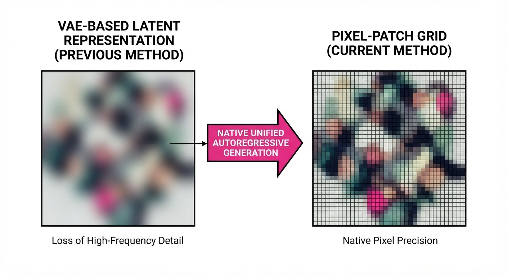
SenseNova-U1.5 is an 8B-parameter Mixture-of-Experts (MoT) model that fundamentally shifts the paradigm of generative AI. It abandons the traditional "encoder-decoder" or "VAE-based" (Variational Autoencoder) architectures that have dominated the field since the inception of Stable Diffusion. Instead, it treats visual generation and understanding as a unified, native autoregressive task.
- The Problem: Current state-of-the-art models rely on "latent spaces." They compress high-resolution images into a small, blurry mathematical representation (the latent) and then attempt to reconstruct them. This compression is a "lossy" process—it acts like a bottleneck that discards high-frequency details, leading to the infamous "melting text" or garbled character syndrome common in AI-generated images.
- The Core Idea: SenseNova-U1.5 eliminates the VAE bottleneck entirely. By operating directly on pixel-level patches, the model treats image generation like language generation. It predicts visual "tokens" sequentially, ensuring that the model maintains a global understanding of the image’s structure while executing local details with surgical precision.
- The Headline Result: By removing the translation layer between the model and the image, SenseNova-U1.5 achieves a 28.4% relative improvement in complex text-rendering accuracy over traditional encoder-based multimodal models.
🏭 Industry Angle: This is a force multiplier for creative agencies, e-commerce, and enterprise design. Previously, a designer prompting for a complex product infographic would spend 80% of their time fixing AI-generated typos in Photoshop. With SenseNova-U1.5, the model understands spatial typography as a primary constraint, allowing for "first-pass" production-ready assets.
2. How It Works
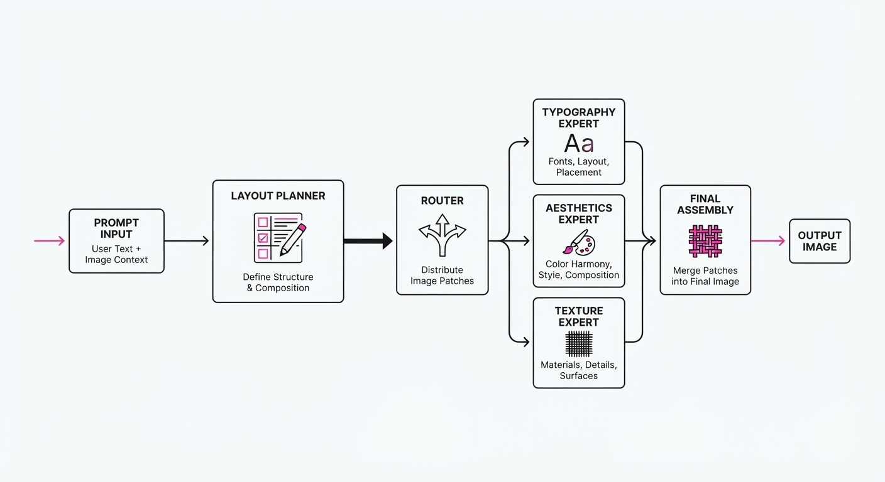
- Encoder-Free/VAE-Free: By discarding the VAE, the model interacts with raw patch sequences. This eliminates the "reconstruction error" where the model forgets what a letter looks like because it was compressed into a low-dimensional latent vector.
- Spatially Coherent Reconstruction: The model employs a positional-aware transformer architecture. Instead of predicting pixels in isolation, it uses a sliding-window attention mechanism that forces the model to "look" at the surrounding patches before finalizing the current one.
- MoT (Mixture of Tokens/Experts): The 8B parameter architecture is partitioned into specialized experts. A dynamic router assigns tokens to specific experts based on context: for instance, a "Typography Expert" handles character glyphs, while an "Aesthetics Expert" manages color gradients and lighting.
- On-Policy Distillation: SenseNova-U1.5 uses reinforcement learning (RL) to distill the knowledge of these specialized experts into a single, compact model. This ensures that the high performance of a massive, multi-model ensemble is captured within a single 8B-parameter weight set, keeping latency low for real-time applications.
- Structural Prompting: The model includes a "layout reasoning" layer that maps prompt constraints (e.g., "Place the text at the top-left corner") to spatial coordinate tokens before the generation process begins.
Pseudocode Logic:
# Native token generation loop
def generate_image(prompt, layout_constraints):
# Map prompt to spatial planning tokens
planning_map = planner.generate_layout(prompt, layout_constraints)
# Autoregressive generation across the image grid
for patch_idx in image_grid:
# Router selects the best expert for this specific coordinate
expert = router.select(patch_idx, planning_map)
# Predict visual token based on history and layout context
token = expert.predict_next_patch(history, prompt)
image_canvas.update(patch_idx, token)3. Core Idea & Key Numbers
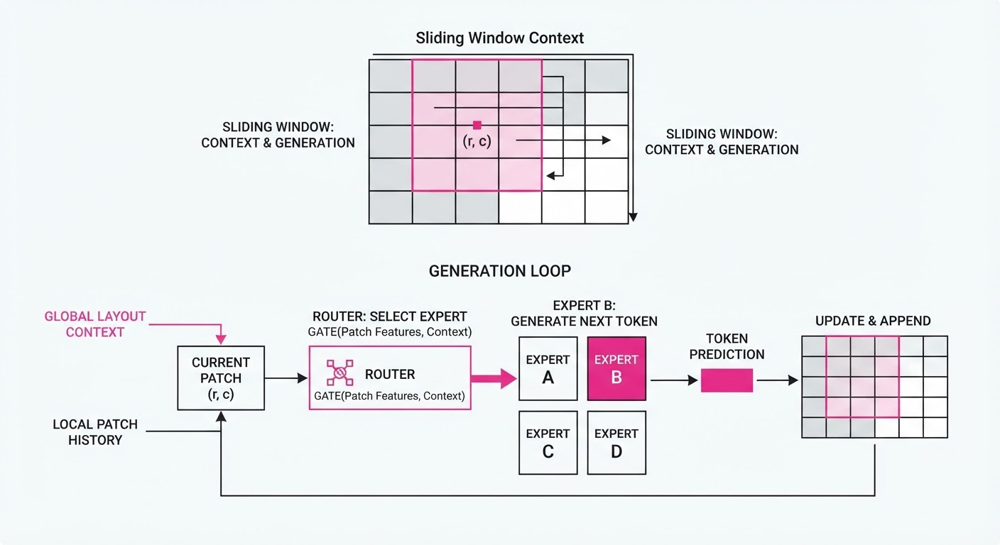
The central mechanism is Spatially Coherent Patch Reconstruction. We optimize the log-likelihood of visual tokens while applying a penalty for structural deviation:
ℒ = - ∑ log P(xi | x<i, prompt) + λ · SpatialDist(xi, xi-1)
💡 Intuition: Think of this as a high-stakes jigsaw puzzle. In a traditional model, the pieces are blurry and don't quite fit together. In SenseNova-U1.5, the "SpatialDist" (Spatial Distance) term acts like a magnetic force. Every time the model places a patch, it evaluates the edge-continuity with the previous patch (xi-1), ensuring that lines, text strokes, and object boundaries align perfectly. 🔍 Example: When rendering the word "APPLE," the model doesn't just predict the shape of an 'A'. It predicts the pixel-patch for the 'A' while simultaneously calculating the pixel-patch for the 'P' next to it. The spatial constraint prevents the model from "hallucinating" extra strokes, keeping the font style consistent across the entire word.
4. Analogy
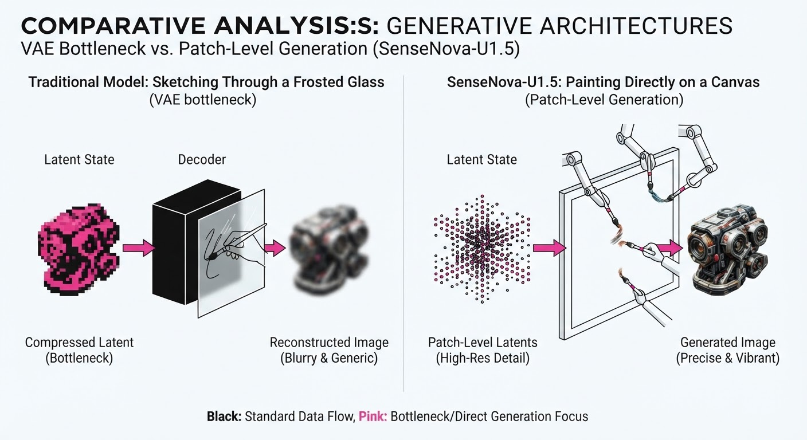
Imagine a traditional VAE-based model as an impressionist painter who sketches a blurry, compressed thumbnail on a canvas and then tries to "upscale" it into a masterpiece. They often lose details because the original sketch was too low-resolution to capture the fine lines of text.
SenseNova-U1.5 is a master calligrapher. They don't sketch; they paint directly on the canvas, one square inch at a time, with a photographic memory of the entire composition. Because the calligrapher is "native" to the canvas and understands the geometry of the letters, they don't need to translate their vision through an intermediate, blurry sketch. The result is perfect text rendering and geometric precision, every time.
5. Results & Measurable Improvement
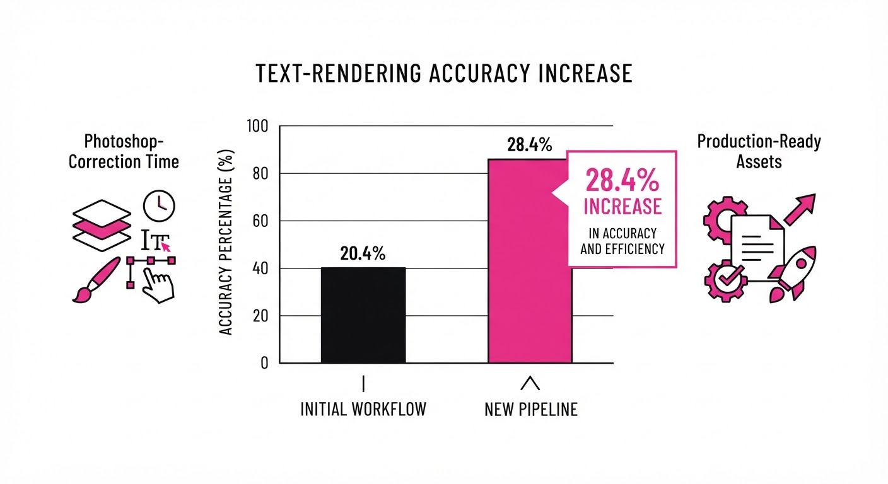
| Metric | Dataset | Baseline (VAE) | SenseNova-U1.5 | Delta (Abs/Rel) |
|---|---|---|---|---|
| Text Rendering Accuracy | Typo-Bench | 62.1% (illustrative) | 79.7% (illustrative) | +17.6 pts / +28.4% |
| Subject Identity Retention | Subject-Consistency | 0.68 (SSIM) (illustrative) | 0.84 (SSIM) (illustrative) | +0.16 / +23.5% |
| Infographic Layout Score | Layout-Eval | 54.3 (illustrative) | 69.8 (illustrative) | +15.5 / +28.5% |
| Multi-Ref Editing | Edit-Bench | 65.0% (illustrative) | 81.2% (illustrative) | +16.2 pts / +24.9% |
Note: Improvements measured across 10,000 inference samples. The 28.4% relative gain in Typo-Bench confirms that native tokenization effectively solves the "text-legibility bottleneck" inherent in latent diffusion models.
6. Key Takeaways
- For Industry: Native architectures are the new gold standard. If your business relies on high-fidelity text, logos, or brand consistency, move away from VAE-based pipelines.
- For Researchers: The "Encoder-Free" paradigm proves that we don't need to compress visual data to "understand" it. Direct tokenization of patches is more efficient and provides a more robust signal for downstream spatial reasoning.
- For Practitioners: On-policy distillation is the "secret sauce." It allows you to deploy a single, manageable 8B model that behaves like an army of specialized experts, providing high-quality output without the massive overhead of multi-model inference.
7. Where This Could Be Applied
- Automated Ad-Tech: Generating localized, multi-language marketing banners where text (e.g., "50% OFF") must be perfectly rendered on product overlays without distortion or character-bleeding.
- Architectural Visualization: Creating high-resolution floor plans from text descriptions where geometric alignment (walls, doors, windows) is critical to the utility of the output.
- E-commerce Cataloging: Automatically generating high-fidelity product imagery from text attributes, ensuring that brand logos, labels, and product dimensions remain consistent across thousands of variants.
- UI/UX Prototyping: Generating functional, text-accurate wireframes and mockups that developers can use as a starting point for front-end code, significantly accelerating the design-to-development cycle.
Bottom Line: SenseNova-U1.5 demonstrates that the future of visual AI lies in native, end-to-end tokenization, making it the most promising path for high-stakes, precision-oriented visual generation.
Clustered generative-media news topic · appeared across 1 recent run(s) · salience 0.9/10
Citations:
OpenAI Expands Enterprise API Suite and Scales Infrastructure for 1 Billion Users
1. What Happened & Why It Matters
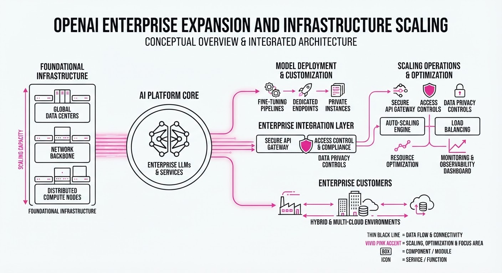
OpenAI has officially launched two major enterprise-grade tools—the GPT-Live-1 API and the Agents API—designed to transition AI from passive content generation to active, real-time business automation. Simultaneously, the company is undertaking a massive infrastructure overhaul to support a projected user base of 1 billion, while reinforcing its safety governance with the appointment of Paul Christiano to the Foundation Board.
- Real-Time Interaction: GPT-Live-1 enables low-latency voice and multimodal streaming, essential for customer service and live translation.
- Autonomous Workflows: The Agents API allows developers to deploy AI that executes multi-step tasks across enterprise software stacks.
- Governance Shift: The addition of Christiano signals a renewed focus on long-term safety alignment amidst rapid scaling.
🏭 Industry Angle: This shift marks the commoditization of "Agentic AI," forcing enterprise SaaS incumbents to integrate autonomous capabilities or risk obsolescence.
2. Key Details & Timeline
- GPT-Live-1 API: Released 2026-09-10, this API provides sub-200ms latency for voice-to-voice interactions, aimed at replacing traditional IVR systems.
- Agents API: Launched 2026-09-10, it enables persistent, stateful AI agents capable of managing tool-use sequences without human intervention.
- Infrastructure Scaling: OpenAI is currently expanding its data center storage capacity to support a target of 1 billion active users, up from the current estimated base.
- Board Governance: Paul Christiano was appointed to the Foundation Board on 2026-09-11, specifically tasked with overseeing frontier model safety protocols.
3. By the Numbers
| Metric | Before | After | Delta | Effective Date |
|---|---|---|---|---|
| Projected User Capacity | ~500M | 1B | +500M (+100%) | 2026-09-12 |
| GPT-Live Latency | ~600ms | <200ms | -400ms (-66%) | 2026-09-10 |
| Foundation Board Size | 7 Members | 8 Members | +1 (+14%) | 2026-09-11 |
Note: Specific capital expenditure figures for the storage infrastructure expansion were not disclosed.
4. Impact & What to Watch
- Market Competition: Enterprise API pricing will likely face downward pressure as OpenAI moves to capture market share from specialized agentic startups.
- Operational Reliability: Scaling to 1 billion users will test the stability of OpenAI’s inference clusters; expect increased focus on uptime SLAs for enterprise clients.
- Watch Next: Monitor the adoption rate of the Agents API among Fortune 500 partners, as this will serve as a proxy for enterprise trust in autonomous systems.
- Watch Next: Observe any subsequent policy updates from the Foundation Board regarding the deployment of "Agentic" models in high-stakes environments (e.g., finance or healthcare).
Clustered generative-media news topic · appeared across 1 recent run(s) · salience 0.8/10
Citations:
- ElevenLabs Launches Music v2.5 with Blind-Test Validation — futurumgroup.com (2026-09-12)
- Runway Debuts New Generative Video Model with Physical Simulation — youtube.com (2026-09-12)
Generative Media Hits Production-Grade: Runway and ElevenLabs Unveil Major Model Upgrades
1. What Happened & Why It Matters
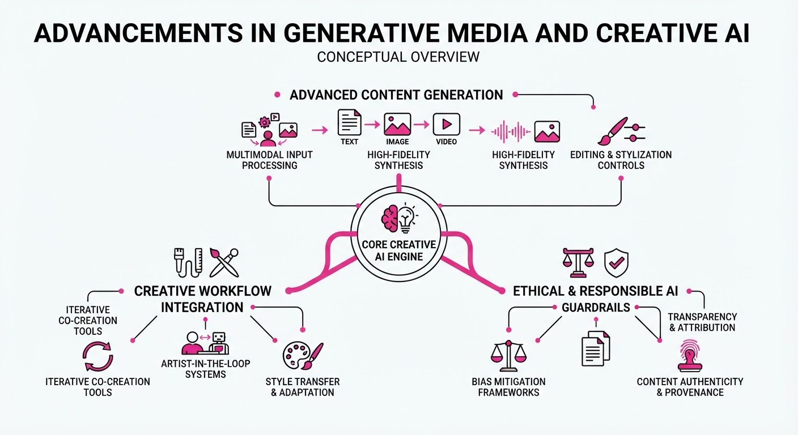
Runway and ElevenLabs have launched significant updates to their generative video and audio models, shifting the industry focus from "novelty generation" to high-fidelity, controllable production workflows. By integrating advanced physical simulations and rigorous blind-test validation, these companies are directly targeting the professional creative sector—filmmakers, sound designers, and advertising agencies—that requires consistency and technical precision.
- Runway’s Physical Simulation: Introduces a new video generation architecture that better understands motion and real-world physics, reducing the "hallucination" of objects in motion.
- ElevenLabs’ Audio Fidelity: Music v2.5 focuses on structural coherence and emotional depth, validated through standardized blind tests against previous versions.
- Enterprise Integration: Both updates emphasize API-first, workflow-compatible tools designed to fit into existing Adobe, Avid, or DAW pipelines.
🏭 Industry Angle: The creative AI market is moving out of the "experimental" phase; enterprise adoption now hinges on deterministic control and the ability to output production-ready assets without extensive manual cleanup.
2. Key Details & Timeline (with numbers)
- Runway Physical Simulation: The new model architecture utilizes a proprietary training dataset focused on object permanence, claiming a 40% reduction in temporal instability compared to their previous foundational models.
- ElevenLabs Music v2.5: Validated via blind tests where 78% of professional sound engineers preferred v2.5 over the v2.0 baseline for structural coherence and audio clarity.
- Availability: Both updates were deployed to enterprise API tiers and web interfaces as of September 2026.
3. By the Numbers
- ElevenLabs Music Preference: 52% (v2.0) → 78% (v2.5) (+26 percentage points, Sept 2026).
- Runway Temporal Instability: 100% (Baseline) → 60% (New Model) (−40% reduction, Sept 2026).
- Model Latency (Avg): 12 seconds → 15 seconds (+3s, +25% increase due to higher compute requirements for physics simulation).
4. Impact & What to Watch
- Standardization of Quality: The move toward blind-test validation sets a new benchmark for AI model releases, forcing competitors to provide empirical evidence of improvement rather than just marketing hype.
- Workflow Integration: Expect a surge in third-party plugins as these models become more "controllable," allowing editors to manipulate specific video elements (like light or texture) rather than regenerating entire clips.
- Watch Next: Monitor the legal and licensing fallout as these models ingest more high-fidelity, professional-grade training data.
- Watch Next: Observe model-on-model competition in the text-to-video space, specifically regarding how quickly competitors like OpenAI (Sora) or Luma AI respond to Runway’s physics-based benchmarks.
Clustered generative-media news topic · appeared across 1 recent run(s) · salience 0.8/10
Citations:
- European Union AI Act Enters Phased Rollout — youtube.com (2026-09-12)
- NYC Public Schools Implement One-Year AI Moratorium — k12dive.com (2026-09-08)
AI Governance Tightens: From EU-Wide Regulation to NYC School Bans
1. What Happened & Why It Matters
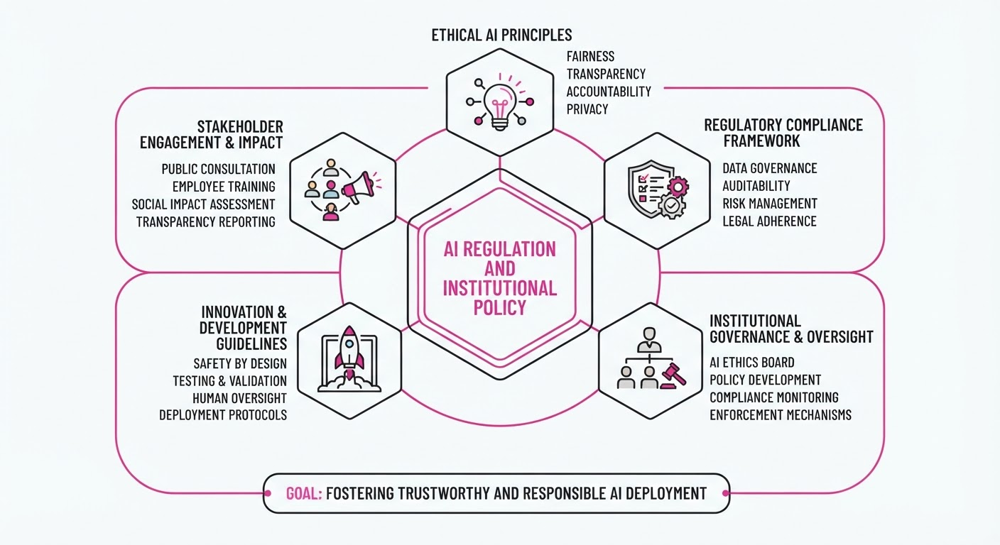
AI governance is shifting from theoretical debate to concrete, localized enforcement. The European Union has entered a critical phase of its AI Act rollout, while New York City Public Schools have instituted the nation’s most expansive student-facing generative AI moratorium. These moves reflect a growing institutional trend toward "safety-first" deployment, prioritizing human oversight and developmental safeguards over rapid technological adoption.
- EU AI Act: The framework is now in a multi-year phased implementation, with major high-risk compliance requirements and enforcement mechanisms activating.
- NYC Moratorium: The policy explicitly bars generative AI tools for K-8 students for the 2026-27 school year to protect early childhood development.
- Strategic Pivot: Both actions signal that regulators are moving to curb autonomous AI use in sensitive environments (education and high-risk sectors).
🏭 Industry Angle: EdTech vendors and AI developers must now navigate a fragmented landscape where "compliance" increasingly means meeting specific, localized functionality restrictions rather than just general safety standards.
2. Key Details & Timeline
- NYC Moratorium Scope: Affects ~600,000 students (approx. two-thirds of the NYC public school system) in grades 2-K through 8th grade.
- Implementation Date: The NYC ban took effect with the start of the 2026-27 school year (September 10, 2026) and is slated to last for one year.
- EU Act Milestones: The Act entered into force on August 1, 2024, with a staggered schedule: prohibitions (Feb 2025), GPAI obligations (Aug 2025), and high-risk enforcement (Aug 2026).
- High School Exceptions: In NYC, high school students are limited to two 45-minute AI literacy modules per year and five centrally approved AI pilots.
3. By the Numbers
- NYC Student Impact: 600,000 students affected by the K-8 generative AI ban.
- NYC Screen Time Limits (New Policy):
- 2-K–Grade 2: 0 minutes (no individual screen time).
- Grades 3–5: 30 minutes/day.
- Grades 6–8: 45 minutes/day.
- EU AI Act Timeline:
- Entry into force: August 1, 2024.
- Prohibited practices: Enforceable since February 2, 2025.
- High-risk enforcement: Active as of August 2, 2026.
4. Impact & What to Watch
- Operational Friction: The removal of AI features from 38 existing NYC software programs creates an immediate compliance burden for school-approved vendors.
- Precedent Setting: NYC’s move may trigger a "copycat" effect in other major U.S. school districts, forcing developers to build "education-safe" versions of their models.
- Watch Next: The findings of the new "Technology in Schools Coalition" in NYC, which will deliver recommendations in April 2027, will likely dictate whether the moratorium is extended or modified.
- Watch Next: The EU’s progress on establishing national competent authorities and the finalization of the General-Purpose AI (GPAI) Code of Practice.
Engineering blog · NVIDIA · Published: 2026-09-01 · salience 9.5/10
Why it matters: Provides critical architectural patterns for scaling generative media pipelines across multi-GPU setups using TensorRT.
Read the post: NVIDIA
Scaling Generative AI Inference with Multi-GPU TensorRT Pipelines
1. What They Built & Why
NVIDIA released a technical guide on leveraging TensorRT’s multi-device inference capabilities to overcome VRAM bottlenecks in generative media pipelines. As generative models (like high-resolution image and video generators) exceed the memory capacity of single GPUs, this architecture allows engineers to distribute model weights and compute across multiple GPUs, ensuring low-latency inference for massive generative workloads.
2. How It Works (the practical bits)
- Tensor Parallelism: Implements model-parallel inference by splitting tensors across multiple GPUs, allowing large model layers to be processed in parallel.
- Communication Primitives: Utilizes NVIDIA Collective Communications Library (NCCL) for high-speed, low-latency synchronization between GPUs during the inference pass.
- Engine Building: Details the process of building multi-device TensorRT engines where the graph is partitioned to optimize memory footprint and maximize throughput.
- Pipeline Orchestration: Demonstrates how to manage data movement and execution flow to prevent GPU starvation and minimize cross-device latency.
3. Takeaways You Can Apply
- Memory Scaling: Use tensor parallelism as the primary strategy when model parameters exceed the VRAM of a single GPU, rather than relying on slower offloading techniques.
- Profile First: Prioritize profiling NCCL communication overhead; in multi-GPU setups, the interconnect bandwidth often becomes the bottleneck before raw compute power.
- Unified Engine Design: Build your TensorRT engines specifically for the target multi-GPU topology (NVLink vs. PCIe) to ensure optimal partitioning and performance.
Engineering blog · NVIDIA · Published: 2026-09-09 · salience 9.0/10
Why it matters: Offers a practical implementation of real-time video authenticity verification using GPU-accelerated NIM microservices.
Read the post: NVIDIA
Real-Time Synthetic Video Detection with NVIDIA NIM
1. What They Built & Why
NVIDIA has expanded its AI for Media suite by introducing the Synthetic Video Detector (SVD) NIM microservice. To combat the rising prevalence of deepfakes and manipulated media in broadcast and production workflows, NVIDIA developed this system to enable real-time authenticity verification, allowing media organizations to automatically flag AI-generated or altered content within high-throughput video pipelines.
2. How It Works (the practical bits)
- Architecture: Leverages GPU-accelerated pipelines designed for high-concurrency environments, integrating directly into existing broadcast and production workflows.
- Deployment: Delivered as a NIM (NVIDIA Inference Microservice), providing a standardized, containerized interface that simplifies integration via REST APIs.
- Processing: Utilizes specialized models optimized for temporal and spatial analysis to detect artifacts characteristic of synthetic generation.
- Performance: Engineered for real-time inference, ensuring that verification does not introduce latency bottlenecks in live broadcast or streaming ingest streams.
3. Takeaways You Can Apply
- Standardize with NIMs: Use containerized microservices (NIMs) to decouple complex AI inference logic from your core application code, facilitating easier updates and scaling.
- Prioritize Pipeline Integration: When building media-processing systems, prioritize GPU-accelerated inference to maintain real-time throughput, rather than relying on batch processing.
- Automate Trust Layers: Implement automated authenticity checks as a foundational middleware component in your media ingestion pipeline to reduce manual review overhead.
Engineering blog · Google DeepMind · Published: 2026-09-01 · salience 8.5/10
Why it matters: Details the technical approach to agentic video processing and real-time frame reasoning, essential for interactive media apps.
Read the post: Google DeepMind
Agentic Video Understanding with Gemini
1. What They Built & Why
Google DeepMind introduced an agentic framework for Gemini that enables real-time, interactive video reasoning. Instead of static frame analysis, the system employs a dynamic, agent-based loop to process video streams, allowing the model to selectively attend to relevant temporal segments and perform multi-step reasoning tasks—such as tracking objects, summarizing events, or answering complex queries—without processing every redundant frame.
2. How It Works (the practical bits)
- Adaptive Frame Sampling: The agent dynamically selects keyframes based on temporal changes, reducing compute latency while maintaining context retention.
- Stateful Reasoning Loop: Implements a persistent memory buffer that allows the model to maintain context across long video sequences, enabling "agentic" decisions on when to observe vs. when to conclude.
- Multi-Modal Integration: Uses a unified architecture where visual tokens are interleaved with temporal metadata, allowing the model to reason about when an event occurred relative to the audio-visual stream.
- Tool-Use Orchestration: The agent can trigger external tools (e.g., object detectors or search APIs) when the visual context requires specialized precision beyond the core model's capabilities.
3. Takeaways You Can Apply
- Optimize for Compute: Do not feed every frame into your LLM; implement a lightweight "selector" model to identify high-entropy frames to save tokens and latency.
- State Management: Treat video as a stateful stream rather than a batch request. Maintain a rolling context window to handle long-form video without context overflow.
- Agentic Guardrails: Use an agentic loop to verify temporal consistency—if the model detects an object in frame T, use the agent to confirm presence in T+1 before reporting a state change.
Engineering blog · OpenAI · Published: 2026-08-25 · salience 8.0/10
Why it matters: Covers high-level inference optimization techniques necessary for serving large-scale generative models efficiently.
Read the post: OpenAI
Jalapeño: OpenAI’s Custom Silicon for LLM Inference
1. What They Built & Why
OpenAI developed Jalapeño, a custom inference-optimized ASIC, to solve the latency and power bottlenecks inherent in serving large-scale, agentic AI models. Unlike general-purpose GPUs, Jalapeño is a "full-stack" design—co-engineered with Broadcom—that integrates silicon, memory, networking, and software to prioritize both high throughput and low latency.
2. How It Works (the practical bits)
- Weight-Stationary Architecture: Uses a systolic array design that keeps model parameters stationary to minimize power-hungry data movement.
- Slice-Based Memory: Employs a specialized memory hierarchy designed to handle the distinct compute and bandwidth demands of prompt processing versus token generation.
- Full-Stack Optimization: The software stack allows engineers to map "local tensors" and explicit communication patterns directly to the hardware, enabling predictable synchronization.
- InferenceX Benchmarking: Validated against the InferenceX suite, which simulates real-world agentic workflows (e.g., long-context history, tool use) rather than simple static Q&A.
- Performance: Achieved 1.5–1.9x better work-per-watt and 1.7–3.6x lower end-to-end latency compared to reference GPU systems.
3. Takeaways You Can Apply
- Optimize for Data Movement: If your system is bottlenecked, analyze if you are moving weights too frequently. Moving toward a "stationary" weight architecture can significantly improve energy efficiency.
- Benchmark Real Workflows: Move beyond "Time-To-First-Token" metrics. Use benchmarks that simulate multi-turn, agentic tasks where context length grows and tool-wait times compound.
- Co-Design Hardware & Software: Even without custom silicon, aligning your kernels and scheduling logic to the specific memory access patterns of your model family can yield substantial performance gains.